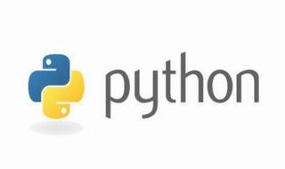

使用PyNMEA2解析NMEA0183报文协议 DATE: 2019-05-20 07:55

使用 PyNMEA2 解析 NMEA 0183 协议
NMEA 0183 是一套定义接收机输出的标准协议，有几种不同的格式，每种都是独立的、逗点隔开文本数据。它们包含了可见的卫星、卫星状态、定位状态以及接收机速度等信息。NMEA 0183 实际上已成为所有的 GPS 接收机最通用的数据输出格式，同时它也被用于与 GPS 接收机接口的大多数的软件包里。
pynmea2 是一个用来处理 NMEA 0183 协议的第三方模块，本文将介绍该模块的安装与使用方法。
安装成功后，你就可以导入和使用 pynmea2，本文之后的示例代码都假设你已通过如下代码导入了该模块：
示例代码演示解析 GGA 数据（数据来自维基百科）：
解析完成后，你就可以通过属性来访问记录中的各个字段了：
除了按照协议约定格式对数据进行解析之外，
此外，解析方法还为输出结果添加了额外的属性：
以上代码只是为了演示
示例，使用下面的代码生成 GGA 数据（使用
pynmea2 是一个用来处理 NMEA 0183 协议的第三方模块，本文将介绍该模块的安装与使用方法。
简介
pynmea2 模块兼容 Python 2 和 Python 3，能够解析 GSA、GGA、GSV、RMC、VTG、GLL 等 NMEA 0183 协议定义的各类数据，功能强大。该模块目前以 MIT 协议开源并托管在 Github 网站上。安装与导入
pynmea2 包已被 PyPI 索引，你只需执行以下命令即可安装 pynmea2：
1 |
$ pip install pynmea2 |
1 |
>>> import pynmea2 |
从字符串解析
解析字符串中 NMEA 0183 协议的数据，可以使用pynmea2.parse(data, check=False) 方法，其中的 check 参数指定是否对消息中的检校字段进行检查。示例代码演示解析 GGA 数据（数据来自维基百科）：
1 2 3 4 |
>>> line = '$GPGGA,092750.000,5321.6802,N,00630.3372,W,1,8,1.03,61.7,M,55.2,M,,*76' >>> record = pynmea2.parse(line) >>> record <GGA(timestamp=datetime.time(9, 27, 50), lat='5321.6802', lat_dir='N', lon='00630.3372', lon_dir='W', gps_qual=1, num_sats='8', horizontal_dil='1.03', altitude=61.7, altitude_units='M', geo_sep='55.2', geo_sep_units='M', age_gps_data='', ref_station_id='')> |
1 2 3 4 5 6 7 8 9 10 11 12 |
>>> print('GPS Quality Indicator:', record.gps_qual)
GPS Quality Indicator: 1
>>> print('Horizontal Dilution of Precision:', record.horizontal_dil)
Horizontal Dilution of Precision: 1.03
>>> print('Latitude:', record.lat)
Latitude: 5321.6802
>>> print('Latitude Direction:', record.lat_dir)
Latitude Direction: N
>>> print('Number of Satellites:', record.num_sats)
Number of Satellites: 8
>>> record.timestamp
datetime.time(9, 27, 50)
|
pynmea2.parse() 函数还做了一些必要的数据转换工作，将经纬度坐标转换为 Python 中的 float 类型：
1 2 3 4 |
>>> print('Latitude:', record.latitude)
Latitude: 53.361336666666666
>>> print('Longitude:', record.longitude)
Longitude: -6.50562
|
latitude_minutes，latitude_seconds，longitude_minutes 和 longitude_seconds，它们存储了大地坐标的分、秒各部分。因此你可以方便地对坐标进行格式化输出：
1 2 3 4 5 6 |
>>> print('Latitude: {:02d}°{:02d}′{:07.4f}″'.format(int(record.latitude), int(record.latitude_minutes), record.latitude_seconds))
Latitude: 53°21′40.8120″
>>> print('Longitude: {:02d}°{:02d}′{:07.4f}″'.format(int(record.longitude), int(record.longitude_minutes), record.longitude_seconds))
Longitude: -6°30′20.2320″
>>> print('Altitude: {:.3f}'.format(record.altitude))
Altitude: 61.700
|
从文件中解析
NMEA 0183 协议数据经常存储在文件中，对于这种应用场景，pynmea2 创建了pynmea2.NMEAFile 类。你可以使用这个类对遵守 NMEA 0183 协议的文件进行处理，只需传入目标文件的路径：
1 2 3 |
>>> nmea_file = pynmea2.NMEAFile('data/demo.gga')
>>> nmea_file.readline()
<GSA(mode='A', mode_fix_type='3', sv_id01='01', sv_id02='20', sv_id03='19', sv_id04='13', sv_id05='', sv_id06='', sv_id07='', sv_id08='', sv_id09='', sv_id10='', sv_id11='', sv_id12='', pdop='40.4', hdop='24.4', vdop='32.2')>
|
pynmea2.NMEAFile 类最基本的使用方式。实际使用中不需要这样，该类已经实现了迭代器和上下文管理器接口。上下文管理器可以帮你打理好文件的打开与关闭，迭代器则可以让循环操作的代码更清晰易读。因此更 Pythonic 的使用姿势为：
1 2 3 4 5 6 7 8 9 |
>>> records = []
>>> with pynmea2.NMEAFile('data/demo.gga') as nmea_file:
... for record in nmea_file:
... records.append(record)
...
>>> print('Count of records:', len(records))
Counts of records: 12
>>> print('The last record:', repr(records[-1]))
The last record: <RMC(timestamp=datetime.time(9, 27, 51), status='A', lat='5321.6802', lat_dir='N', lon='00630.3371', lon_dir='W', spd_over_grnd=0.06, true_course=31.66, datestamp=datetime.date(2011, 5, 28), mag_variation='', mag_var_dir='') data=['A']>
|
从数据流解析
pynmea2 还能够直接处理 NMEA 0183 协议的数据流，你可以使用pynmea2.NMEAStreamReader 类来解析数据流：
1 2 3 4 5 6 7 8 9 |
>>> streamreader = pynmea2.NMEAStreamReader(input_stream)
>>> while 1:
... for record in streamreader.next():
... print(repr(record))
...
<GSV(num_messages='3', msg_num='1', num_sv_in_view='11', sv_prn_num_1='10', elevation_deg_1='63', azimuth_1='137', snr_1='17', sv_prn_num_2='07', elevation_deg_2='61', azimuth_2='098', snr_2='15', sv_prn_num_3='05', elevation_deg_3='59', azimuth_3='290', snr_3='20', sv_prn_num_4='08', elevation_deg_4='54', azimuth_4='157', snr_4='30')>
<VTG(true_track=89.68, true_track_sym='T', mag_track=None, mag_track_sym='M', spd_over_grnd_kts=Decimal('0.00'), spd_over_grnd_kts_sym='N', spd_over_grnd_kmph=0.0, spd_over_grnd_kmph_sym='K')>
<GLL(lat='4250.5589', lat_dir='S', lon='14718.5084', lon_dir='E', timestamp=datetime.time(9, 22, 4, 999000), status='A')>
...
|
生成 NMEA 0183 数据
上文介绍过了数据解析，你还可以使用 pynmea2 包来编码生成符合 NMEA 0183 协议的数据，只需使用合适的数据来实例化 pynmea2 中对应的类。示例，使用下面的代码生成 GGA 数据（使用
pynmea2.GGA 类），传入的参数依次为数据源（talker）、类型（type）和字段记录（fields）：
1 2 3 4 5 6 |
>>> record = pynmea2.parse('$GPGGA,020249.20,3511.49986189,N,11922.42306087,E,0,04,4.1,-2.285,M,4.514,M,,*7E')
>>> print(record.data)
['020249.20', '3511.49986189', 'N', '11922.42306087', 'E', '0', '04', '4.1', '-2.285', 'M', '4.514', 'M', '', '']
>>> sentence = pynmea2.GGA('GP', 'GGA', ('020249.20', '3511.49986189', 'N', '11922.42306087', 'E', '0', '04', '4.1', '-2.285', 'M', '4.514', 'M', '', ''))
>>> str(sentence)
'$GPGGA,020249.20,3511.49986189,N,11922.42306087,E,0,04,4.1,-2.285,M,4.514,M,,*7E'
|
异常处理
pynmea2 在数据解析失败时会抛出pynmea2.nmea.ParseError 异常，在需要的时候，你可以捕获并处理它。示例：
1 2 3 4 5 6 |
>>> try:
... gga_msg = pynmea2.parse('at^sisw=1,1500,0,0')
... except pynmea2.nmea.ParseError:
... print('Warning: a line parsing failed!')
...
Warning: a line parsing failed!
|